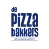
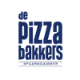

Hoe werkt
Too Good To Go?
- 1. download de app
- 2. kies een verrassingspakket
- 3. druk op reserveren en betaal
- 4. haal je pakket op en swipe de app
- 5. smakelijk eten!
*De inhoud van elk tasje kan verschillen, omdat het wordt gevuld met overgebleven voedsel dat op dat moment beschikbaar is. Hierdoor is geen enkele tas precies hetzelfde!
 
